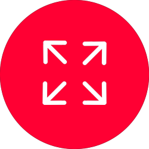
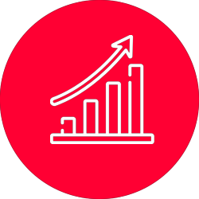

윤리경영이란?
기업이 경영활동을 함에 있어 경제적ㆍ법적 책임 수행은 물론,
사회적 통념상 요구되는 윤리적 기대수준까지 충족하는 기업경영을 의미합니다.
- 1경제적책임
- 이윤창출을 통해 기업의 연속성 유지
- 2법적책임
- 사회가 법을 통해 만들어 놓은룰 속에서 기업경영 활동 수행
- 3윤리적책임
- 법적으로 강요되지 않으나 사회통념에의해 형성된 기준에 맞는 윤리적 경영활동
- 4자선적책임
- 경영활동과 직접 관련이없는 문화활동,기부,자원봉사 등의 활동 수행
윤리경영 시스템 3요소
-
행동기준
CODE
-
제도
COMPLIENCE
-
공감대
CONSENSUS
- 01윤리규범 및 신천지침 제정
- 기업윤리의 기준으로 이해관계자에 대한
책임을 규정하는 것이며 구체적이고,
성문화 된 구성원의 행동지침 포함
윤리규범, 실천지침 등
- 02제도 운영
- 윤리경영을 실현하기 위한 조직과
각종 제도 윤리경영 전담조직,
상담/제보 처리기능, 윤리감사 등
- 03공감대
- 체계적, 주기적인 교육을 통하여
윤리경영의 실천에 대한 구성간의
공감대 형성 CEO MESSAGE,
교육프로그램, 캠페인 활동 등
해외 COMPLIANCE
- 해외 Compliance Program이란?
- SK건설은 해외 프로젝트의 추진 또는 수행과정에서의 입법과 부정행위의 근절에 대한
의지를 천명하여 정도, 준법경영 환경을 정착시키기 위해 노력하고 있습니다.
- 해외 Compliance Program 운영
- SK건설은 해외반부패 의지를 확인하고 이를 효과적이고 효율적으로 실천하기위하여 해외 Compliance Program을 수립하였습니다. Compliance Program은 회사 구성원의 윤리적인
행동과 자발적인 법 준수를 촉진하기 위해 마련된 일련의 절차로서, 회사의 Compliance 문화를 정착시키기 위한
방향으로 운영되고 있습니다.
- 운영의 필요성
- 세계적인 부패행위에 대한 제제강화 및
발주처와 Biz Partner의 반부패요구 증가
법적/계약적 Risk의 선제적 예방 및
체계적 대응
- 
- 운영 방향
- 사내 반부패문화 확산
Biz Partner와의 거래에서 유발되는
Compliance Risk 차단
회사의 반부패 활동에 대한
외부소개
- 
- 기대 효과
- 대내외 신뢰도 제고
세계시장에서의 기업의 생존 확보
지속적으로 진화 발전하여
궁극적으로 기업가치 제고
- 비윤리적 행위에 대하여 제보를 받습니다.
- Biz. Partner 등 이해관계자로부터 금품, 향응, 편의 등을 수수하는 행위
- 회사자산 및 정보를 부적절하게 사용하거나 부당한 이득을 취하는 행위
- 기타 이해관계자들과 관련된 비윤리적 행위 등
- A/S 및 아파트/상가 등의 분양과 관련된 사항은 당사고객행복센터나 고객 불편사항 접수센터를 통해
관련내용을 접수하시기 바랍니다. 윤리경영 상담/제보에서는 본 건에 대해서는 별도 회신을 드리지 않습니다.